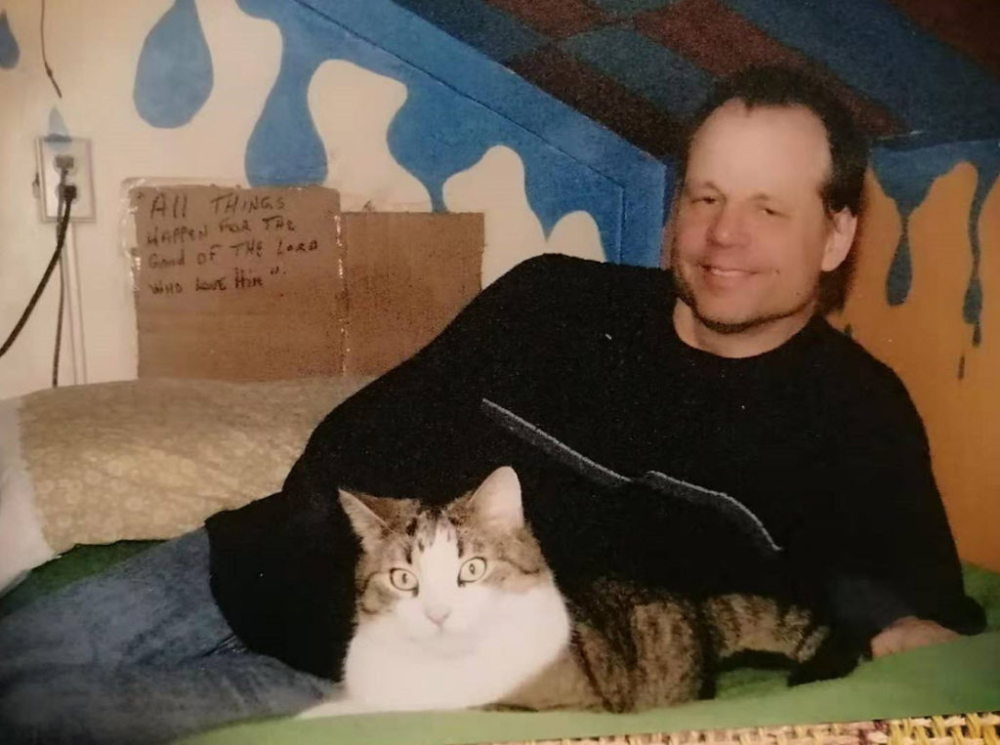
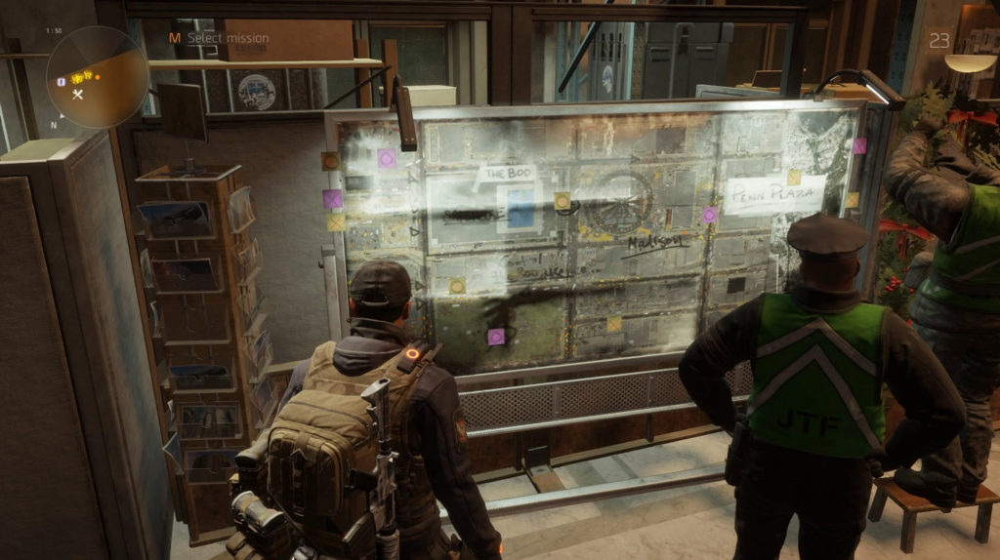

This post is going to be a little bit different. Part of it, is in essence, a little bit about what it was like staying at Father Pete’s retreat. But the other part of it is about prayer, and intention campaigns. And some of it is about the non-physical reality that surrounds our physical reality. So it’s gonna be a big mish-mash of all kinds of stuff, that are all intrinsically connected, but to see the big picture and the over all relationships we need to look at the tiny bits and pieces.
Well, are you ready? Buckled up and all that?
Summer 2020
The Coronavirus is raging all over the globe. Industry has contracted. Many people live under lock down conditions, and the entire society all over the world is disrupted. Disruption of society…
…a perfect opportunity for the evil and maligned full of evil intent.
And as a result, bad people find opportunity.
And Metallicman was caught up in one of these evil snares. I was scammed. And I am still dealing with it, but that’s another story.
I own a house in Shenzhen. I bought it before I was retired, and thus I bought it very cheap. And while I was doing long time in Prison in Arkansas, my house was accruing in value. Each year, as Shenzhen grew in size, the value of the house grew as well. Then they put a subway under the house and it’s value sky-rocketed.
I’ve been renting my house out.
It’s been a good source of income for us.
But then Coronavirus hit. And our tenants moved out. And we needed to find new ones. Well, what do you know! This company offered to take care of our house for us. We just pay them one months rent and they handle everything else. They get the tenant, and handle all problems or issues that arise.
Good deal!
So we paid the money and told them what our rent out requirements were. They agreed to manage everything. (Without getting involved in currency conversion and all that, let’s keep the numbers simple.)
Rent was $1000 / month. They agreed to it, and almost immediately said that they found someone. We signed the contract and that was that.
…oh, my goodness. So so quick.
One week later, we discovered that the company found tenants promising them a rent of $500 / month if they would pay two years up front. Now, naturally, that set alarm bells off, but the company paid us the first month rent of $1000. So we shrugged our shoulders and figured that who cares, as long as they paid us the agreed amount.
One month came and went. They didn’t pay us the second rent.
So we went to the office. It was all closed up and boarded up. WTF?
Long story short…
This guy set up the company. Operated the company in around 30 cities. Got about one or two thousands others like us, and rented out our houses at basement prices for advance payments. Then he skipped town.
(Tumbleweeds blowing in the street. Crickets chirping.)
It’s a criminal case and it is on-going. Our beef with the company is a civil case and we are suing them, but no action can occur until after the criminal case is resolved. And we are in the process of suing the current tenants to either pay us of leave. No squatters allowed.
Ok.
So what?
My Affirmation Campaign
I have not spent too much time on this particular bit of misfortune. I only added this line in my affirmation prayer campaign;
Those that have cheated and swindled me and my family this year has been identified and located. True and real justice upon these individuals is administered by those who have suffered from their activity. This justice is immediate and substantive.
Let’s talk about the non-physical reality
In this reality, thoughts create our reality. You think bad thoughts and bad things will happen. You think good thoughts, and good things will happen. If you don’t understand this, look up Quantum Physics 101.
Now, what do you think that 2000 angry families are thinking about this guy? Not just swindled, but swindled for one, two or even three years in the future! They will not be happy, and in China, if you piss off the wrong person, they will hunt you down and slaughter your ass, sure as shit.
All those bad evil brain waves…
Have you ever had someone so pissed off at you that they just beamed the hate right at you. Like they are trying to laser beam you to death? Well, imagine that multiplied by four (people per family) and again by 2000 (families affected). All these negative waves…
It will cause things to happen.
This is reality. They will hunt this guy down, and torture and kill him. If not personally, they will hire someone. It costs 25,000 RMB to hire an attorney like we did. But only 15,000 RMB to hunt this guy down and bring him to you.
Well, we moved on.
It crippled our finances. Coronavirus reduced our family income by 50%, while everything else and prices rose. But we survived, and are still squeaking by. It’s life. That’s what it is. You deal with it and move on.
You adapt. You grit your teeth. You carry on.
Then, in the middle of November 2020, my “situation board” lit up.
Alert to my “situation board”
Yah. Some explanation is required as to what the Hell I am talking about.
What is a gut feeling? gut feeling. An intuition or instinct, as opposed to an opinion based on a logical analysis. Jennifer's mother had a gut feeling that something was wrong when her daughter wasn't home by 10 o'clock. -Gut feeling - Idioms by The Free Dictionary
Women have “woman’s intuition”. Men have a “gut feeling”. I have a “situation board”. It’s a neural net of all our senses that combine to make an accurate appraisal of our situation at any given moment in time. By practicing and through alertness and discipline we can sharpen our senses, hone our abilities, so that our intuition, and feelings, or “situation board” becomes more accurate and useful.
David J. Schwartz once related a story in his book “The Magic of Thinking Big” about an event that he once experienced. He once secured a very, very large order with a big, big client. After he had dinner with the client and everyone shook hands and left, he remained and had a few drinks with his co-workers. All night they made fun of the new client. They made fun of his appearance, and of his dealings, of his company, and of his dress. They spent the entire night making fun of him.
It doesn’t make sense why they did, you would think that they would be happy and elated to secure such a big contract. But they did. I would well imagine that alcohol played a role in this event, but we don’t know for sure what happened.
The next day, while at work, he received a phone call from the client. He withdrew his offer. The client couldn’t give a good reason for doing so except to say “I have a very bad feeling about this”. Indeed.
I’m sure that he did.
Trust your instincts. Trust your gut feelings.
In the book 4,000 Days: My Life and Survival in a Bangkok Prison, the author relates what happened late at night just hours before the Thailand police busted into his hotel room and arrested him. He had this really awful feeling. He felt fearful and afraid and ugly. He wanted to ditch his illegal drugs right then and there, but he shrugged it off as his imagination.
It wasn’t.
Trust your instincts. Trust your gut feelings.
Before I was arrested for my heinous “crimes”, I too felt an awful, just awful dark icky feeling. It was like being dipped in molten hot dog shit, and it felt awful. I felt like gathering up everything and just bolting. Anywhere.
Looking back, maybe I should have…
Trusted my feelings.
Anyways, after that event, I decided that I would fully trust my “gut instincts” and be alert for the slightest change in my feelings and identify what is going on (to the best of my ability). I guess that it was easier for me as I have had years of world-line travel under my belt, and exposure to all sorts of strange things. So I pretty much knew what was going on. What I never thought about was honing my “gut feeling” abilities into a sense that I could rely upon.
I call this “practiced and cultivated skill” my “situation board”.
11 Signs Your Intuition Is Stronger Than Most People’s
My wife believes that my “situation board” is the same as every man’s “gut instinct”. Further she believes that “Woman’s intuition” is the same as a “man’s gut instinct”. I disagree. But many women can relate to this article below…
Reprinted from HERE. All credit to the original author. Edited to fit this venue.
You know the feeling. It starts somewhere in the gut. It usually blossoms from there when there is a decision to make. It could be a confrontation between two ice cream flavors or something bigger like what job offer to take. Often you might feel like you should fight it, battling it back down to the root. But, guys, you've heard your mothers and your grandmothers: follow your intuition. There are some signs your intuition is on point and reason to trust that gut feeling. There are some times you feel like you just know something. You might also know that you're not a psychic and don't have the ability to tell people their fortune — but still, you know things. This is your intuition calling you. Maybe somebody's facial expression sparked a judgement in you telling you not to trust this person. There's some psychological science behind that ~feeling~. As Psychology Today explained on its site, "intuition is a mental matching game. The brain takes in a situation, does a very quick search of its files, and then finds its best analogue among the stored sprawl of memories and knowledge." From there, you're able to listen to intuition and develop a "hunch" about a certain situation. You know when a question is asked in class, and you know the answer but you doubt yourself and don't raise your hand? Then, as it turns out, you were right? Your intuition is mostly likely always on point. It's just a matter of learning to trust it. [1] You Have Vivid Dreams Dreams and intuition are both from the same place. Your unconscious. If you have vivid dreams, there's a chance that your intuition is on point because you're getting a wave of information from your unconscious. It might be a little frightening at first, but, this wave of intuition can be helpful in your approach to waking life. Who do you need to get in touch with? Does someone close to you need to know that you love them? Keep a journal by your bedside! [2] You Keep Catching The Clock At A Certain Time You know when you go to look at the clock and everyday you seem to be catching the time at exactly 4:44 or another specific time? That could be your intuition as it relates to unconscious information your brain stores. "When a person catches a clock at a certain time, and you feel that perhaps a message is attached from a loved one who has passed, saying hello, or providing an answer to a question you have been pondering, then that 'knowing' is something inside yourself that you intuitively understand without needing to hash it out with another person," Licensed mental health counselor and wellness coach, Jill Sylvester tells Bustle. You just know when to look. And you know you have all the answers you're looking for within you. [3] You're Empathetic MindBodyGreen listed empathy as a sign of an intuitive person: "you're highly sensitive to what others are feeling." Everybody gives off a certain amount of energy — either negative or positive. If you're intuitive, you may have empathetic tendencies and actually be able to feel how someone else is feeling. And, if you're in tune to what people feel, you're more likely to pick up on how to act and how to handle certain situations. [4] You Can See Through People You might be out on a date or hanging out with new friends who seems charming, but your intuition is totally on point if you can see through the smiles and wit. Of course everybody deserves a chance, but maybe a snide remark registers and it'll make you feel like a person is performing as someone they're not. "Your intuition is strong when you might experience a negative or positive emotion, in the presence of someone or something that may not be healthy for you or may be exactly who and what you need at this time. It’s a sense. A feeling. A trusting," Sylvester, author of Trust Your Intuition, tells Bustle. [5] You're In Tune With Your Body Sometimes you just know when your body needs to rest. Maybe you haven't started even sniffling yet, but you can feel that your body is getting worn down. Listen to this! It's important to trust that you know when something is feeling off. Give yourself a break. "Intuition is strongest when you know something inside yourself without needing it to be validated by another person," Sylvester explains to Bustle. You should totally seek a medical opinion if you're not feeling well, but trust your gut when you know something is off and it's time to see the doctor. [6] You Pick Up The Phone When Someone Is About To Call You know when you're thinking of someone? And then you think about maybe calling them? And then you do? And they pick up and are like, "I was just going to call you!" Or maybe you're reaching for the phone when they call you? That is your intuition being totally ON POINT. Call it a connection between best friends, but something registered to pick up the phone and get on a call. [7] You Analyze Your Safety The one thing you should probably never doubt is the gut feeling that you aren't safe. On a recent night walk in a new city, my maps app directed me down a rather concerning path alongside a river that had no lights. As I began to walk, something in my gut — be it my mother or my intuition — screamed, "not today, no thank you." And I chose to listen. I made it safely to my destination, relieved I didn't advance further on the path. If you feel uncomfortable or unsafe, trust your gut and do not proceed. [8] You Pick Activities Up You know the saying: it's like riding a bike. You just know how to do something. As reported by Experience Life, an study by the University of Chicago showed, "while novice golfers did better when they thought carefully about their putts, the performance of more experienced golfers got much worse when they reflected on what they were doing." Basically, if you're an expert at something, you've developed instinct and muscle memory. Don't overthink it. Just trust your gut. I bake pies. When I'm trying too hard to impress someone, I typically always burn the pie or undercook it by overanalyzing everything. But when I turn on a playlist and trust my instinct and intuition, they turn out just the way I wanted them. [9] You Hire and Let Go Of The Right People In an interview with Forbes, Shelley Row, the author of Think Less Live More: Lessons From A Recovering Over-Thinker, said, "Intuition plays an essential role for decision-making in rapidly changing environments; if there are contradictions in the data; ambiguity due to lack of data; or decisions that center on people (hiring, firing, or political decisions)." While in business you can make logical decisions based on data collected, when it comes to a changing environment and what's right for your team, that comes from the gut. [10] You Show Up At Specific Times Sometimes you just have that feeling that the train is going to be late or the friend you're meeting will arrive early. This goes back to the idea that the feeling in our gut is attached to information stored in our brain. "Experience is encoded in our brains as a web of fact and feeling. When a new experience calls up a similar pattern, it doesn't unleash just stored knowledge but also an emotional state of mind and a predisposition to respond in a certain way," Psychology Today wrote on its site. You probably have registered that that specific train is always running 10 minutes late and your friend is always 15 minutes early. And so you show up to scheduled appointments and hang outs perfectly on time. Nevertheless, your cognition intuition is on point. [11] You Predict Someone's Reaction Sometimes you don't know how someone will react to finding out that you're moving or you got a new job or you can't make the party. But, because you most likely have had experiences with the people you're telling this to, you can probably predict how they'll react. Even, sometimes what they'll say. Ever caught yourself saying, "I knew you were going to say that!"? This is because the brain stores information that become a navigational point of emotional reference for the future. In other words, that's your intuition being on point.
I really don’t know how accurate these 11 points are.
I just cannot do any of them.
I think instead, it’s a measure of one’s EQ rather than any thing else. But, I discussed this with my wife, and she seems to believe that these are all great indicators of ability and that I should include them here.
So I have.
What seems clear to me is that there is a fundamental understanding in the differences between “woman’s intuition” and a “man’s gut feeling”. We need to account for those differences when reading my narrative.
So what is the difference between my “gut feeling” and a “woman’s intuition”?
From the article titled “7 Gut Instincts You Should NEVER Ignore”, by Mateo Sol. Copied as found without editing aside to fit this venue. All credit to the author.
In order to fulfill your spiritual purpose in this life, you’ve got to walk the path less traveled. And to walk the path less traveled, you have to embrace your inner wolf. It is your inner lone wolf that will guard, guide, and protect you with courage, integrity, and intelligence.
But here’s the thing: in order to embrace your inner wolf, you’ve got to listen to your gut instinct.
The problem is that our gut instincts are often polluted by fears, prejudice, and mental clutter. In this article, I want to share with you the seven gut instincts you should never ignore. You’ll also learn how to differentiate the voice of fear from the voice of primal wisdom.
What is the Gut Instinct?
Your gut instinct is the physical reaction you have to the world around and inside of you.
When you experience an overwhelming “gut feeling,” your body is carrying out a primal response to subconscious information. The ultimate purpose of your gut instinct is to protect you. As your gut instinct is the most ancient and primal “sixth sense” you have, it is the one you can rely upon the most.
One example of your gut instinct in action would be deciding to spontaneously avoid walking down a road at night because something “feels off.” That feeling is your gut instinct warning you that danger is afoot. You may then glimpse an intimidating gang of men down the street as you hurry by – your gut instinct has just saved you from potentially being robbed, beaten up, raped, or worse.
Put simply, your body is like the television screen on which your subconscious (the radio waves) transmits its information. When you can learn to read your body, you can learn to accurately tune in to your gut instinct.
We human beings like to believe ourselves to be separate from animals. Yes, we might be more sophisticated. But at our core, we are still animals – human animals. Our primal impulses and evolutionary origins don’t just disappear because we sit and read the newspaper each morning or wipe our asses with lavender-scented toilet paper.
As noted by anthropologist Clifford Geertz:
… man is an animal suspended in webs of significance he himself has spun.
Rather than get hoity-toity about the fact that we’re only really advanced animals, why not embrace it? By honoring the wisdom of the subconscious mind and its impact on the body to produce ‘gut instinct’ we can save ourselves from a lot of suffering. (This has been proven by the way.)
What’s the Difference Between Gut Instinct and Intuition?
Gut instinct and intuition are often used synonymously. And, yes, they are interconnected. But they aren’t quite the same.
So what’s the difference?
Put simply, gut instinct is your primal wisdom. Intuition is your spiritual wisdom. We need both if we are to walk our spiritual paths with courage and intelligence.
Intuition is very cerebral – it is a calm and clear sense of “knowing.” On the other hand, gut instinct is very visceral and physical – you feel it in your body.
Intuition can be expressed through the body, and the gut instinct can be expressed through intuitive knowing. But generally, both are clearly discernable and strikingly different in their experience. Also, gut instinct is much more emotional and reactive (as it is wired in the primal brain), whereas intuition is more neutral and calm.
Examples of Gut Instinct
Some call it a “hunch,” others an “inkling,” but in this article, we’ll refer to it as the gut instinct. Here are some examples that are taken from the animal kingdom and human (animal) behavior of gut instinct:
- A herd of zebra sense danger while grazing. They cannot see the lions lurking in the surrounding savannah, but something is distinctly “off.” One zebra whinnies and the herd begins galloping away vigorously.
- A herd of elephants meander through the deserts in search of water. Instinctively they know what direction to move in to find their sustenance.
- A cat sits on the edge of a three-story house and wants to find a way down. She slinks over to the edge and stares at the ground apparently about to jump – but then changes her mind. She climbs down to the first story roof and then makes the jump, apparently aware on an instinctual level that jumping from any higher distance would injure her.
- A person approaches you at a bar wanting to flirt with you. You start reciprocating, but something feels wrong. You sense a predatory quality about this person. You don’t trust them. You excuse yourself and leave.
- Two hikers get lost on a trail within the mountains. Without a compass or any way to determine a direction back to camp, they sit silently and tune into the surrounding trees. Suddenly one of them points to the west, “I have a feeling that is the way back!” An hour later they have made it back to home base.
- You’re driving down a highway at night. Suddenly, the impulse overtakes you to change lanes immediately. You obey the impulse, and a couple of seconds later miss a large spike of glass that could have punctured your tire and rendered you stranded on the side of the road.
- A young woman is sitting in class at college. Out of the blue, she feels the strange impulse to return home. She ditches the class and catches a taxi, a pit of dread looming in her stomach. When she arrives home, she finds her mother on the floor having a heart attack. If she had ignored her gut instinct, her mother would have most likely died alone.
- A man has two job offers. One of them pays less, and the other pays more. Logically he would choose the job that pays more, but he can’t shake the knot of dread that forms in his stomach every time he considers accepting the higher paying offer. He decides to choose the job that pays less. Two months later, he is relieved that he chose the right offer as the higher paying company went out of business due to a high profile lawsuit.
I hope you now have a good idea of how the gut instinct operates!
Signs You’ve Experienced a Gut Instinct
Pay attention to these signs:
- A sudden feeling of dread or fear (that is out of context)
- A strong urge to do something (feels like an inner nudge or pull)
- Full-body chills, goosebumps or “tingles” up the spine
- Nausea or physical uneasiness
- Sudden hypervigilance (or being on “high alert”)
- A clear and firm voice within you instructing you to do/not do something
You might experience all of these signs at once or only one or two of them.
Is it Fear? Or is it Your Gut Instinct?
Don’t get them confused!
But also, don’t worry if you have already. Chances are you were never taught about the difference between superficial mental fears and true gut instinct.
The mind can easily fool us, particularly when it comes to gut instinct. After all, we feel our emotions within our body. When you’re scared, you most likely get clammy hands, butterflies, and an increase in heart rate, right?
In a similar fashion, when we experience a gut instinct, we also receive physical sensations.
So how on earth can we distinguish between the two?
My response is to pay attention to your mind. What is the quality of your thoughts? Is your mind racing, frantic, or chaotic? If so, you are experiencing fear.
On the other hand, if your mind is relatively neutral, but your body is experiencing strong reactions (like a sense of impending doom for instance), you are experiencing a gut instinct.
In other words, when you need to distinguish between the voice of fear and your gut instincts, always turn your attention to your mind.
Why?
Gut instincts are spontaneous – they arise out of the blue. They don’t have time to build-up in the brain, therefore, the brain is relatively still and neutral. There is no “hmm, should I? Shouldn’t I?” going on. There is just an immediate DO THIS/DON’T DO THIS.
Fears, on the other hand, build-up. They are typically more vague, nagging, unclear, and tumultuous. If your mind is spinning, if your thoughts are everywhere, you are experiencing fear, not gut instinct.
7 Gut Instincts You Should NEVER Ignore
Obviously, you must be the judge. But there are some situations in life where your gut instincts shine the most.
While it’s easy to brush off most nagging sensations, please never ignore the following ones:
1. “I’m in danger”
Remember that your gut instincts reflect what your subconscious mind already knows. Although you may not be able to pinpoint what exactly the danger is, please listen to this inner warning. It could be the difference between life and death.
2. “They’re in danger”
Yes, you might sound like a lunatic. Yes, you might feel embarrassed or perplexed. But if you genuinely feel that someone is in danger, tell them. You have nothing to lose. You might just prevent the person from making a big mistake or endangering themselves.
3. “This isn’t the right choice”
If you get a strong and clear feeling that what you’re doing isn’t right, pay attention. Even if there is no moral or logical reason why you should be feeling that way, take heed.
4. “I need help”
Your gut instinct doesn’t only warn you of danger, it also helps to preserve your emotional well being. If you receive a strong sensation that you need help (whether physically, emotionally, mentally or spiritually), seek it out. Don’t linger.
5. “I need to help them”
At some point in our lives, the overwhelming desire to help someone will arise. There may not be any rational reason why. The other person may appear to be perfectly fine on the surface. But don’t let appearances deceive you. Have a conversation with the person. Ask them how they are. This might make you feel vulnerable or uncomfortable, but you will at the very least make the person feel special, and at the most potentially save their lives.
6. “Something feels off in my body”
Unless you’re a hypochondriac (which is unlikely), your gut instincts rarely lie about the state of your health. If a sudden strong and clear desire arises to see a medical professional, do it. Get a full health assessment, and even if nothing comes up, feel proud of yourself for practicing self-care.
7. “This is it!”
Often when the perfect life calling, spiritual path, job, house, decision, option, etc. comes along, your gut instinct will immediately notify you. If you receive a strong and clear feeling that practically screams “YES” don’t ignore it! This is one of the most important reasons why it’s essential to listen to your gut instinct. It could be the difference between making a life-fulfilling choice and a soul-starving decision.
Trust Your Gut
So long as you’re able to distinguish between the voice of fear and the spontaneous feelings of your gut instinct, it is safe to trust your gut.
Trusting your instincts is an invaluable life skill and one that will tremendously benefit you on the spiritual path. After all, this instinct is built into our very DNA, so why not make the most use out of it?
As a final recommendation, I suggest practicing mindfulness meditation if you struggle to trust your gut. Mindfulness meditation will help you to become aware of your thoughts and body sensations. The more awareness you can develop, the easier it will be to make the distinction – it will become second-nature to you.
How was I able to cultivate my latent and inherent ability?
After I left Prison, I was able to leave the Hard Labor Facility at ADC “Brickey’s” East Arkansas Regional Unit and stay with family on parole. Parole is the “rehabilitation” part of my five year sentence.
For reasons that are not really important right now at this point in my narrative, it become prudent for me to move to a monastery, or a “men’s retreat” to help stabilize my return to society. This was a suggestion by my parole officer, and he was right. I needed something that my biological family was unable to provide at that time.
This is important after enduring the “punishment” part of the Hard Labor sentence.
The monastery, or a “men’s retreat”, was a great place to center myself and slow down…way down from all the changes over the last few years. It pretty much consisted of an arrangement of various small farms. Each one with a building set up to house around 20 to 30 men in small cubicles.
Each cubicle was a very small bedroom. It held a very lumpy bed, a easy chair to sit on. A small side table with a lamp, and a bible. It was really nice, if a bit primitive.

We worked the farm. Took care of the plants, the livestock and worked together communally to fend for the needs of the community. Between the work tasks were long period of quiet meditation, prayer, and similar activities.
The first week was a shock. And it took me three weeks to get used to the really, really, really slow pace of life. But then, once I adjusted, it was really nice. I was able to calm down and do well.
The farms were in the middle of no-where. You could spend days walking down the roads and see nothing except trees. Not even isolated farm houses. We were “in the sticks” most certainly. Isolated wasn’t even the word for it. There was zero television and radio reception. You couldn’t even get AM radio. That’s how isolated the place was.
Anyways…
There was plenty of time to contemplate life and mistakes. And I contemplated quite a bit. Part of what I did was totally revamp my prayer affirmation campaign styles and methodology. But another thing that I did was try to home my “gut instincts”, or as I call it my “situation board”.
I personally believe that everyone needs to do this. But you just cannot devote a few minutes here or there. You need bulk periods of free time. Free time as in zero interruptions, and distractions. Only you. And I was able to do it at “Father Pete’s”. And it was glorious.
What is the “situation board”
The big change in how I dealt with things was that I now recognize that the physical world is a trivial image of a much larger non-physical reality. And I am constantly alert for changes in my personal “feelings”. The slightest change and I start looking for reasons for the incident. Was it something physical? Something that I ate? Or something that I did? Or is is associated with something non-physical.

Since then I have been busy mapping out “flags” or “tell-tales” (to use a nautical term) to help me identify what non-physical things that I am sensing.
Sometimes I am very accurate. Eerily accurate. And other times, I am way off track. I am not that good identifying everything that is going on. My ability is dependent upon the strength of the effect and the feeling. So to simplify things, I classify how strongly I perceive the non-physical events with an accuracy reading.
- Minor, light, unusual.
- Buggy, nagging, pestering.
- Abrupt, clear, and strong.
- Very strong and powerful. Full body effect.
In my “situation board”, I view the minor things of no consequence and try to ignore them. They might mean that something is actually going on, but I really can’t tell what. So I just have to wait to see what will happen. My personal experience is that in three days something will manifest. And I’ll end up slapping my forehead saying “so THAT is what this is all about“.
Of course, I already related the Very Strong and powerful Full-Body effect that I felt prior to my arrest. That’s a great example. And luckily, it’s a preciously rare event for me to “feel”.
And abrupt, strong and clear “feeling”
It has been my experience that when I have an abrupt strong and clear “feeling” on my “situation board” that is is actually occurring. I can give and provide numerous examples, but you all should realize by now that this isn’t necessary. If I feel something, then I feel it.
Which brings me back to the story about my house in Shenzhen. Remember that?
Yeah and the guy who swindled me, and a few thousand others out of our rental income for years so that he could “run away” with our earnings.
And you know, he only thought about the physical. getting the money so that he can enjoy the physical life. he never gave a thought about the non-physical. All he thought about was himself in his little physical world. And never to the consequences of his actions.
In the middle of November, I was in my house (not in Shenzhen, my other house in Zhuhai) and I was in the study. Oh, getting some things, I don’t remember what I was doing specifically, when suddenly my “situation board” all lit up in blinding and bright colors…
I "felt" that there was a strange youngish man (late 20's to middle 30's) in my room with another entity. A guide, or a mentor, or a agent of some sort. This young man had a real "chip on his shoulder", a very bad and angry attitude, and was condescending of everything around him. The entity was explaining to the young man something along the lines of "...and look at how your actions affected this family and the hardships that you imposed on them by your actions...". And his response, was "oh, boo hoo. Too bad. So what's the deal..." And then the image dissolved and I "felt" them move out and on-wards.
Just my feelings. Eh?
Yeah.
Maybe.
Don’t let anyone ever tell you that we (in the non-physical bodies) don’t ever learn, or review our life and the good and bad things that we have been involved in. Some people might call this being an angel with a ghost. To me, they are two non-physical beings…
This week
Welcome to this week. It’s the last week in November, and I am writing this on Thanksgiving. Which is an American holiday that celebrates… who knows what it actually celebrates anymore? Different cultures coming together? Family and friends? The end of a crappy-tastic year?
And on this Thanksgiving day, I lived my normal day to day life, and I didn’t even bother to celebrate it. Finding a turkey in China is damn near impossible. Though I was tempted to go to KFC for some fried chicken and mashed potatoes.
Anyways…
We decided to check in with our attorney. When we called the attorney that was dealing with our lawsuit against the company that swindled us, he told us that there has been a complication in the entire process.
The owner of the company that swindled us “had an event”. And will be unable to testify or resolve the issue(s) at hand.
As a result, other methods of restitution and other processes must now come into play regarding resolution of our legal issues.
Conclusion
I strongly believe, in my very bones, that the physical world that we experience is just a vector of world-line travel.
Once we finish our path, our consciousness leaves the physical and enters the non-physical realm.
And in this realm is so much, much, much more than what we know of and realize about. I believe that it is important to keep this awareness alive and at the top of our minds always.
Always keep this reality at the top of your mind. Even when you are getting drunk, cavorting with pretty girls and eating all those fine, and delicious foods. Realize where you are.
I also strongly believe that as long as we are true to our natural selves, and are not tricked or seduced by others towards a love of things, or abuse of vices…
… or get involved in any of the many, many sidetracks in this physical realm…
… that we will ride out our earth-side reality experiences and end up living a full and productive life.
It is a life with love, happiness, care, and shared experiences with others.
You don’t have to believe my experiences. For they are very personal and unique to myself. You, might have other experiences, and some might be very difficult to relate or strange for others to understand. But please just be the best you can be. Don’t try to trick, or hurt others, and be a good contributing member of your society. And everything will turn out just fine.